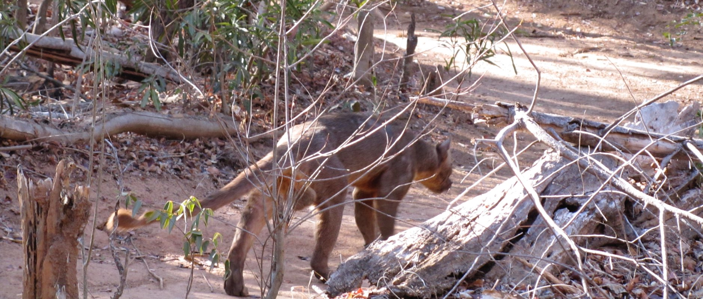

Madagascar's largest native predator, and our conservation efforts to protect this remarkable species.

The fossa is closely related to the mongoose family and has evolved to become Madagascar's largest predator. It inhabits forest habitats throughout the island, relying on a diverse diet ranging from lemurs to small reptiles.
Habitat loss, fragmentation, and human-wildlife conflict pose major threats to the fossa's survival. Deforestation, in particular, has drastically reduced suitable habitats for this elusive carnivore.
Several organizations, including ours, are working to establish protected areas, reduce human-fossa conflict, and engage local communities in conservation activities.
Fossas are incredibly elusive animals, and there are very few publicly available images or videos of them in their natural habitat. We're privileged to share this rare footage captured by our staff and research partners during field work in Madagascar's forests.